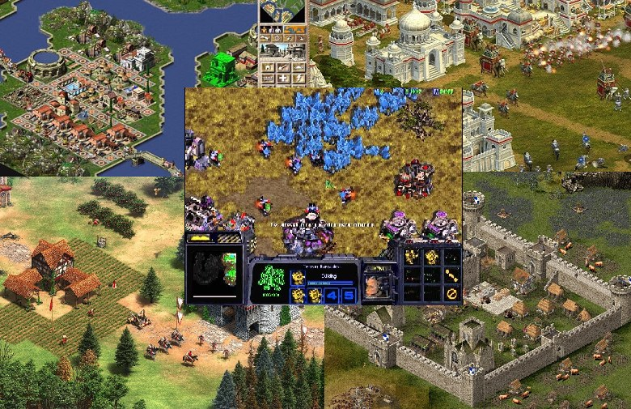
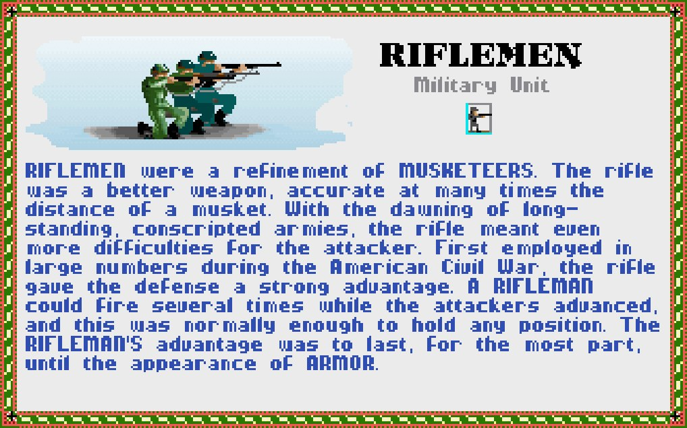
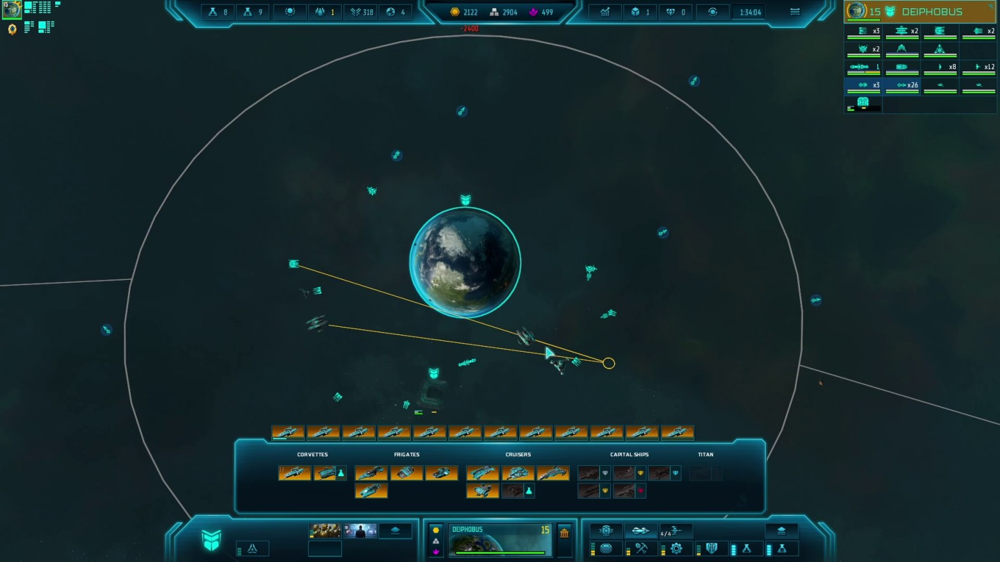
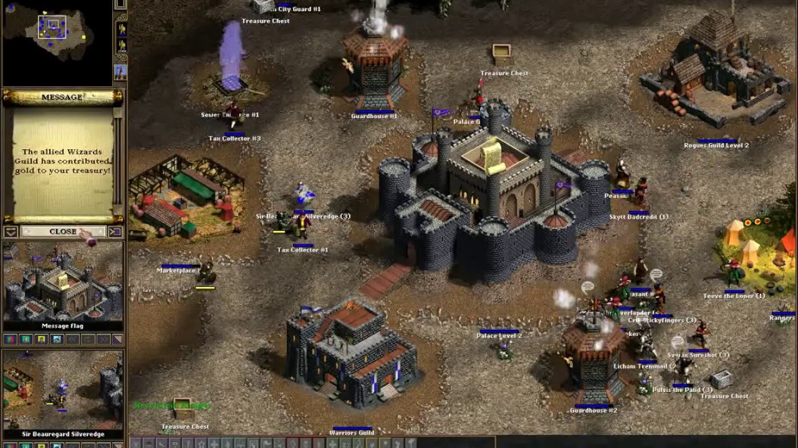
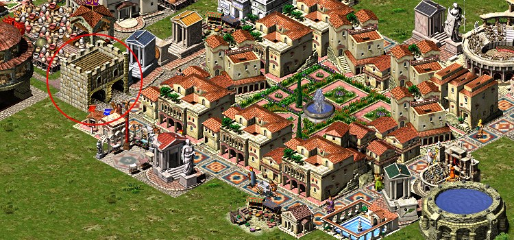
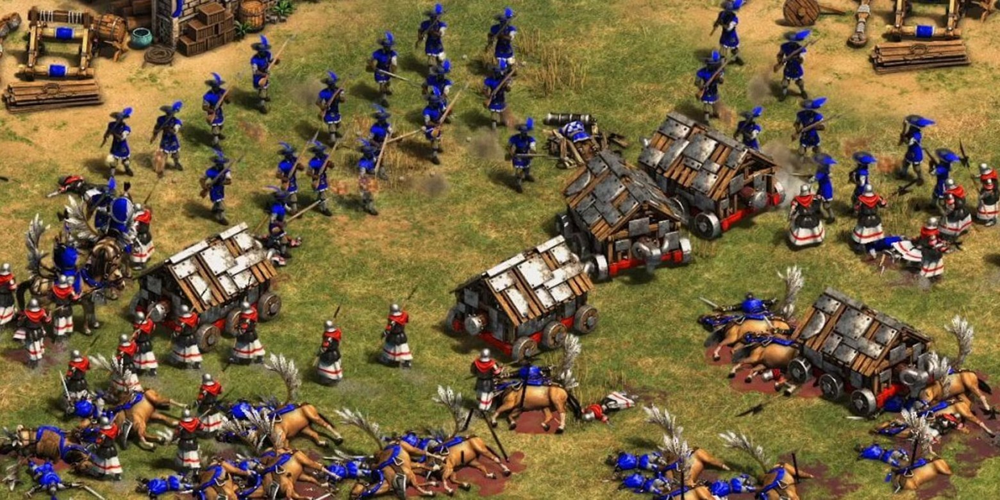
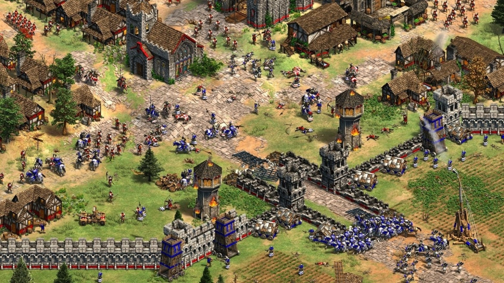
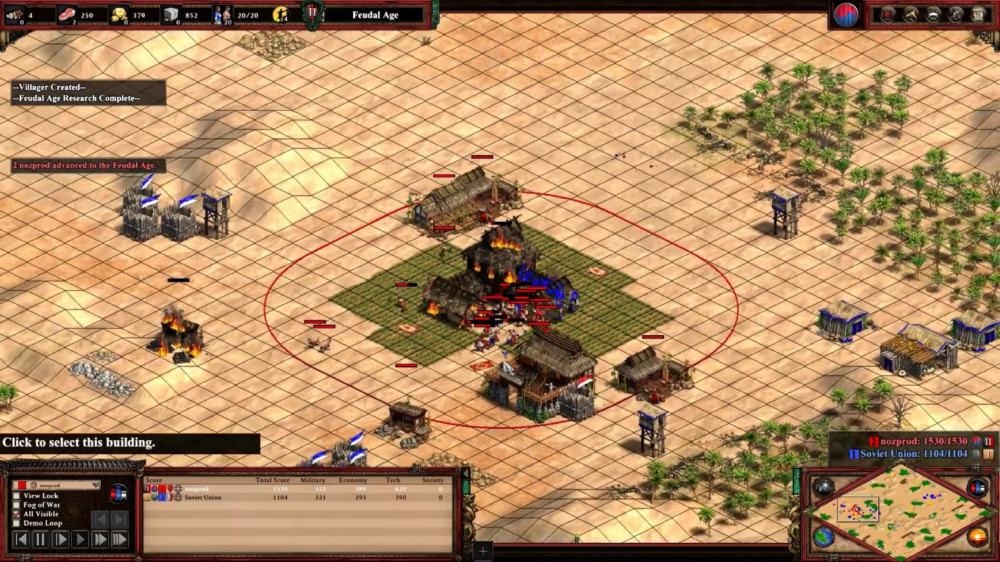
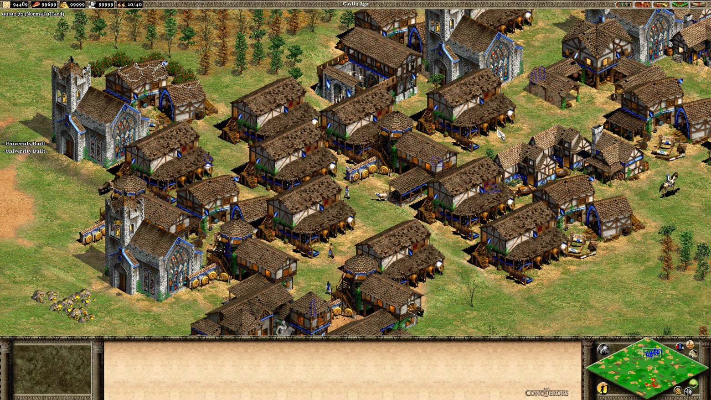

In the late 90s, in the era of games like Caesar III, Pharaoh, Stronghold and Zeus: Master of Olympus — and in case you didn't know, the father of all these games was Simon Bradbury (though for Pharaoh and Zeus he was more of a godfather) — the idea of simplifying the user interface started gaining popularity. To a large extent this was a response to the criticism that overloaded UIs scare off a wide audience (and that's true, EVE devotees excluded), there was a need to somehow attract younger people who, neither then nor now, were especially eager to dig deep into mechanics. Against this backdrop developers began deliberately hiding complex internal mechanics (black box gameplay) from the player — including in city-building strategies.
Already in Caesar III (1998), even though it had excellent visualization of house needs and production chains, it still left a lot of numeric values off-screen: the exact number of workers employed in buildings, the internal request-processing queue, the priorities in distributing resources.
The player had to figure out a lot by trial and error, calculating district parameters on paper and drawing the goods-distribution chain. Compare that with the manuals of Age of Empires II, where hundreds of pages broke down every coefficient in detail.
It's important to understand: the point is not to show the player everything down to the last formula, but to keep them interested for the whole session. A well-built interface should work on two levels: a teaching one — for newcomers, where the basic logic is explained (for example, how to lay down plumbing or build a market) — we hide our intentions and mechanics far away and don't show them; and a reference one — for those who are already hooked and want to dig deeper: how exactly goods are distributed, how guard patrolling works, how a house's evolution level is calculated.

A very good example of the reference approach is the Civilopedia in the Civilization series, which was later picked up in the RTS genre too. For instance, in Rise of Nations: Rise of Legends (2006) there was a hidden "expert" tooltip that appeared while holding the Alt key — it revealed the guts of the internal game calculations. A mode like that would have been very useful in the Caesar3+ games too, and it did exist, but only through cheats, helping the player better understand why some houses don't evolve, or where goods "disappear" to in the warehouse.
Developing city-builders like Caesar/Stronghold/SimCity is always a balance between atmosphere, accessibility and complexity. But it's precisely the competent presentation of reference information that can make the gameplay more transparent and the experience more satisfying.
How black box gameplay works
Strategy games and their subgenre of city-builders begin with board games. The pleasure in strategy games comes from unraveling the rules (probos, Lat. probare — "to test", "to check", "to prove") and making decisions (deos, "decidere" (Lat.) — "to decide") that have consequences. Strategy games bring that experience to the screen — without the need to gather friends around one table — and hide probos in the depths of the logic, while taking deos to the extreme, handing all decisions to the player.
But at some point developers started actively using scripted missions in single-player campaigns. And in games like Caesar III and especially Zeus: Master of Olympus this became noticeable. Yes, missions like "reach a certain culture level" or "collect tribute for Poseidon" create variety, but often at the expense of depth and freedom of decision-making.
A scripted structure constrains: the enemy shows up strictly on schedule, losing is impossible because the game will start "supporting" the player for free. Goals are fixed, strategic variability is reduced to a minimum. The player doesn't control the situation, but simply follows the designer's scenario, solving a puzzle. And that contradicts the essence of strategy — making meaningful choices and seeing the consequences of your actions.
When you build a city in Caesar III in "sandbox" mode, with no clear external goals, you really are in control: you decide where to place warehouses, how to set up production, which districts to service first. But when you carry out the mission "reach 50 noble villas", the decisions become formal; the missions are certainly interesting, but limited in replayability — after two, three, ten losses you'll understand the mission's logic and break the black box, the probos is gone.
That's exactly why games like Cities: Skylines / Dwarf Fortress / Caesar3 and others get replayed over and over in sandbox mode. There's no scenario constraint there — random maps, an open economy, dynamic needs — and none of it breaks the black box.

The black box doesn't stretch forever
After I talked about the sandbox, you might have thought you can expand a game by adding more units, buildings or resources. That's partly true, and many developers arrive at the formula: more content -> means more game. Even from large projects you can hear a game pitched as a list: "we have 60 buildings, 20 deities and 150 unique events!". But! there's always a sneaky but...
Such an approach substitutes the essence of the concept. Good design isn't an abundance of assets, it's the quality and quantity of connections between mechanics, the structure of decisions.
Content isn't the goal, it's the means of delivering choices to the player. What's the point of ten kinds of units that differ only by texture? And players, maybe not right away, but they see it. And it becomes a disappointment, because a lot of content was announced, but in fact it isn't there, or it's just visual differences.
That's exactly why games like AoE2, SC, SC2, Majesty, Caesar III, Pharaoh, Zeus stay alive decades later. They aren't overloaded with mechanics, but every system is tuned so that it gets used. Build a forum? Sounds simple. But is there enough housing nearby, is the district served by a market, will the entertainers reach it, and won't Mars get angry if you forget about a temple? Seems like just one building — yet it adds a fair number of decisions.
In Zeus it especially shows how constraints can strengthen a game. You can't build a megalopolis with full automation — that's done deliberately, that's how the game's logic is written. You'll still have to manage the city, solve problems. Even the deities that randomly appear on the map force you to adapt. Each new condition isn't a "feature" but a new facet of an old choice — that's how games were made in the 2000s. Or take Majesty, where the idea of blackbox gameplay was cranked to the max by taking away the ability to control units: you can only observe and set goals, but that's a special genre.

Limits on decisions
How many decisions does a game need to be rich but not overloaded? It depends on the genre, the company and the game itself. In StarCraft, Blizzard used no more than 12 active elements (units, groups, abilities, resources) the player can effectively interact with in the visible area.
This isn't a magic number; it roughly corresponds to the cognitive limit on memorizing pairs of objects for most players, and here you can trace another well-known trait of top SC players — they all had good memory and could simultaneously remember 15 or more pairs of random cards. Coincidence? I don't think so.
Caesar is of course not SC, but here too they were solving a similar problem. The first missions are simple: bread, water, housing. Then come amphitheaters, doctors, warehouses, wine supplies, the need to please Poseidon, avoiding the wrath of Ceres… Everything is introduced in stages, through growth and a gradual expansion of the mayor's responsibilities. Such pacing helps the player gradually build a mental model of the game — and not burn out.
To burn out — here it means to stop enjoying the game and start working as a warehouse manager. Plain over-complication kills the game's depth. When a player is given 25 kinds of identical goods that don't affect anything meaningful — the choice becomes an illusion. But when there are just 3 resources, yet each is integrated into many systems (economy, health, trade, the favor of the gods) — the game gains structure. Look at AoE2: there are only 4 resources, but they're skillfully offset by levels of civilization technology. Add a hypothetical honey there, and you'll have to rework the tech tree, making it simpler, because the tech tree is the same resources, just in different packaging; and no matter how hard you try to cram more mechanics into the game, a person can't hold more than 12 pairs of things in memory. Everything that falls out of that short working memory will lead to dissatisfaction with the game and the developers.
So when a game designer chases only the number of "features", without points of intersection (game mechanics) — they lose both the features themselves, and the combinatorics of mechanics, and the ability to reveal them to the player, to keep surprising and intriguing.
The strategy games of the 2000s are great examples of how limited but interconnected design gives rise to long sessions and good replayability on small maps.
Combinatorics of mechanics
Games grow old, interfaces get tiresome, graphics go out of fashion, and most importantly — the people the game was written for change: they grow up and change their habits, life principles, mentality.
But why do people play some games for years and decades, while others get launched a couple of times? It's not about how beautiful or complex they are, but about how willing the game was to hand part of the control over to the player.
In this respect the whole Caesar series is almost exemplary. Yes, they have no full-fledged rules editor like some RTS games, and they're focused on single-player from the start. But even within the basic functionality the game gives space for setting your own goals. Someone builds the perfect symmetrical city for the aesthetics, someone tries to ensure prosperity without imports, and someone completes missions with a minimal number of houses or without using forums.
The game has no roadblocks and no way to delimit districts, but players found a way to do it using gates. The developers didn't design that possibility in, but the combinatorics of connections made it possible. This is one example of the combinatorics of connections, but it's far from the last.

This is a simple but powerful form of modifiability — a dynamic black box, without changing the rules, gives rise to the interest of exploration. Players themselves start inventing goals or making tasks harder; the game's life cycle doubles and triples without the developers' involvement.
But that's only possible if the game's internal system is flexible enough to begin with and is built not as a set of scripts, but as a set of reactions — the economy reacts to non-standard situations, the gods behave unpredictably, supply chains can be reshaped. Then the player gains an interest in exploring the boundaries of the simulation, a feeling that they can play "what if", rather than just follow a scenario.
In contrast, many modern strategy games — even very good ones — are too rigidly scripted. You've all long been counted in focus groups, and each group was handed its own script, and there's no simple way there to change the rules or the structure. For example, in some RTS games it's still impossible to play a match with more than two teams, or to split control of one faction between two players. That limits not only the multiplayer but the imagination itself — imagine if a city in Caesar could be built by two players?
Is ideal gameplay balanced?
Good balance is a state where "everything works correctly". But when everything is correct — that's always boring; players will understand the rules and the game will stop being interesting. That's why AoE2 has lived so long — it's played by unpredictable people who pull off crazy stuff on multiplayer maps.

As for the Caesar and Pharaoh series — they aren't a clash of people or a contest of capabilities. But it's a city-building simulator where the player has to make choices continuously, that's how the game's logic is set up. Develop immediately or wait it out? Direct the surplus harvest to trade or keep it as insurance against a bad harvest? What matters more for storage — goods or provisions? Send the labor force to the gold mines or to building a monument? Such dilemmas aren't decoration, they really affect the development of the settlement. That's exactly what gives rise to the thrill — the motivation to keep playing.
As Sid Meier said: "A game is a series of interesting choices" — "Игра представляет последовательность захватывающих решений". I'll add: an interesting game is a chain of meaningful decisions with noticeable results.
As soon as genuine dilemmas disappear from the gameplay — engagement disappears too. If trade outperforms internal consumption, or the supply system is too primitive — the equilibrium is disrupted, the alternatives vanish, and the process turns into a mechanical following of an algorithm.
What I want to say is that a disrupted balance (not a broken one) is normal. In perfectly balanced mechanics there's nothing to choose from. When there's a single "right" route, the other options are useless, and the game becomes monotonous, uninteresting. Equilibrium won't necessarily cause instant displeasure, but it will quickly destroy replayability.
Replayability is a fickle and delicate notion. And if luck decides everything — decisions also lose their meaning, and the enjoyment of the game quickly disappears. In most interesting and long-lived games the gameplay is unbalanced. Ideal balance will bore you with its visible rules. Broken balance can be spectacular but will quickly tire you out. A disrupted balance may look crooked, but it will hold players for many hours.
Different imbalance (player's time)

When it comes to balancing units or strategies à la Age of Empires II, we often compare them by cost: how much the resources cost, how much food, wood, gold you need to spend, how long the construction takes. However, it's easy to overlook one more important factor — the player's own time. Not in the in-game sense, but literally: how much real attention and mental effort a given decision requires.
In RTS games like AoE2, the player constantly needs to make decisions under time pressure: the economy can't be paused, the army demands control, and the enemy is already scouting. Even strategies that are great by cost can be ineffective simply because they require too much micromanagement or constant attention.
Managing villagers in the first age, advanced micro tactics with mounted archers, manually distributing the economy for a fast castle — all of this drains the player's attention resources. And novices always have less of that resource. There can also be a map that breaks the usual development strategies.
Different imbalance (player's skill)

Another kind of imbalance is skill, memorizing rules and development techniques. In AoE2 the mastery curve can be very steep. Strategies that are effective at the novice level can turn out useless at the pro level — and vice versa. For example, tower-rush strategies or scout spam are simple to execute and effective at the 900–1100 ELO level, but against the competent defense of a 1600+ player they won't bring success. At the same time, strategies with a fast castle age and a switch into unique units (like the Aztecs or Burmese) require a precise economy and knowledge of the timings.
Likewise, different civilizations require different levels of micro. Britons or Franks forgive a novice's mistakes, while, say, the Huns, Tatars or Vietnamese only reveal themselves in skilled hands. AoE2 is poorly balanced overall, and that's good — because the winning strategies aren't carved in stone and change their effectiveness depending on the player's level. That means "simple" strategies and civilizations should be competitive at a low level, while "complex" ones should reveal their advantage as mastery grows, without being imbalanced at the start.
Different imbalance (metagame cyclicity)

The longevity of Age of Empires II is built on the idea of metagame imbalance. It's precisely the meta that determines the strategies of most players, regulates the strength of civilizations and decides what's considered "optimal" play at the current stage. And most importantly — it's constantly evolving, drawing players into a living exploration of the mechanics.
With each new patch or expansion, new civilizations appear, old ones get reworked, units, technologies and economic bonuses are adjusted. You'd think the imbalance should stay put, but in Age of Empires II it shifts. Strategies that dominate in one season can weaken in the next. Even the meta of hunting boars and luring deer is the result of player discoveries that the developers didn't write in directly.
Players look for optimal paths, come up with non-standard build orders, study specific matches. At a high level the game turns into a chess match where you have to anticipate the opponent's strategy and civilization, prepare a counter-strategy, and do all of it under very limited time. Quick adaptation becomes more important than the initial plan and memorized strategies. And so the meta already reaches the level of streams, tournaments and replays, spilling over into discussions on Reddit.
Such imbalance isn't a bug, but a fundamental element of AoE2's design, which keeps the game alive. The rules of the metagame shift, old builds die, new ones appear, and this endless flux keeps interest in the game alive decades later.
← All articles